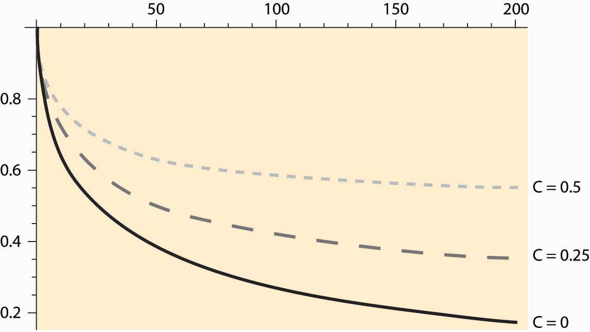
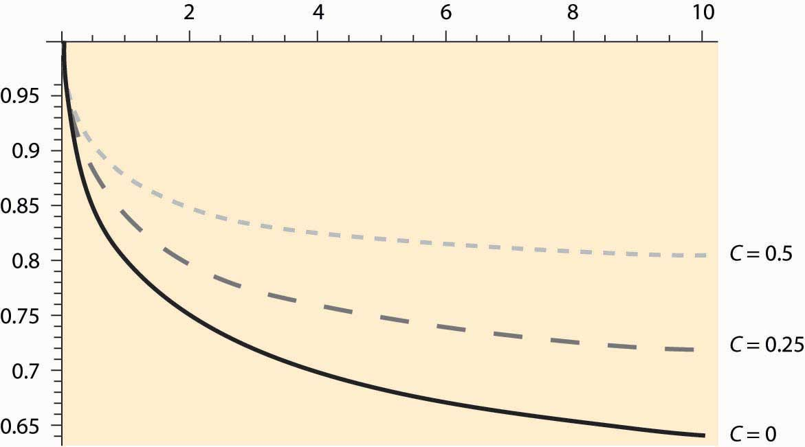

Risk has a cost, and people and corporations buy insurance against financial risk.For example, NBC spent $6 million to buy an insurance policy against U.S. nonparticipation in the 1980 Moscow Summer Olympic Games—and the United States didn’t participate (because of the Soviet invasion of Afghanistan)—and NBC was paid $94 million from the policy. The standard approach to investment under uncertainty is to compute an NPV, using a “risk-adjusted” interest rate to discount the expected values received over time. The interest rate is increased or lowered depending on how risky the project is.
For example, consider a project like oil exploration. The risks are enormous. Half of all underwater tracts in the Gulf Coast near Louisiana and Texas that are leased are never drilled, because they turn out to be a bad bet. Half of all the tracts that are drilled are dry. Hence, three quarters of the tracts that are sold produce zero or negative revenue. To see how the economics of such a risky investment might be developed, suppose that the relevant rate of return for such investments is 18%. Suppose further that the tract can be leased for $500,000 and the initial exploration costs $1 million. If the tract has oil (with a 25% probability), it produces $1 million per year for 20 years and then runs dry. This gives an expected revenue of $250,000 per year. To compute the expected net present value, we first compute the returns:
Table 11.2 Oil tract return
| Expected revenue | EPV | |
|---|---|---|
| 0 | –$1.5M | –$1.5M |
| 1–20 | $0.25M | $1.338M |
| Net | –$0.162 |
At 18%, the investment is a loss—the risk is too great given the average returns.
A very important consideration for investment under uncertainty is the choice of interest rate. It is crucial to understand that the interest rate is specific to the project and not to the investor. This is perhaps the most important insight of corporate finance generally: The interest rate should adjust for the risk associated with the project and not for the investor. For example, suppose hamburger retailer McDonald’s is considering investing in a cattle ranch in Peru. McDonald’s is overall a very low-risk firm, but this particular project is quite risky because of local conditions. McDonald’s still needs to adjust for the market value of the risk it is undertaking, and that value is a function of the project risk, not the risk of McDonald’s other investments.
This basic insight of corporate financeThe study of funding of operations of companies. (the study of funding of operations of companies)—the appropriate interest rate is determined by the project, not by the investor—is counterintuitive to most of us because it doesn’t apply to our personal circumstances. For individuals, the cost of borrowing money is mostly a function of our own personal circumstances, and thus the decision of whether to pay cash for a car or borrow the money is not so much a function of the car that is being purchased but of the wealth of the borrower. Even so, personal investors borrow money at distinct interest rates. Mortgage rates on houses are lower than interest rates on automobiles, and interest rates on automobiles are lower than on credit cards. This is because the “project” of buying a house has less risk associated with it: The percentage loss to the lender in the event of borrower default is lower on a house than on a car. Credit cards carry the highest interest rates because they are unsecured by any asset.
One way of understanding why the interest rate is project-specific, but not investor-specific, is to think about undertaking the project by creating a separate firm to make the investment. The creation of subsidiary units is a common strategy, in fact. This subsidiary firm created to operate a project has a value equal to the NPV of the project using the interest rate specific to the subsidiary, which is the interest rate for the project, independent of the parent. For the parent company, owning such a firm is a good thing if the firm has positive value, but not otherwise.It may seem that synergies between parent and subsidiary are being neglected here, but synergies should be accounted for at the time they produce value—that is, as part of the stream of revenues of the subsidiary.
Investments in oil are subject to another kind of uncertainty: price risk. The price of oil fluctuates. Moreover, oil pumped and sold today is not available for the future. Should you develop and pump the oil you have today, or should you hold out and sell in the future? This question, known as the option value of investment, is generally somewhat challenging and arcane, but a simple example provides a useful insight. An optionThe right to buy or sell at a price determined in advance. is the right to buy or sell at a price determined in advance.
To develop this example, let’s set aside some extraneous issues first. Consider a very simple investment, in which either C is invested or not.This theory is developed in striking generality by Avinash Dixit and Robert Pindyck, Investment Under Uncertainty, Princeton University Press, 1994. If C is invested, a value V is generated. The cost C is a constant; it could correspond to drilling or exploration costs or, in the case of a stock option, the strike priceThe amount one pays to obtain a share of stock. of the option, which is the amount one pays to obtain the share of stock. The value V, in contrast, varies from time to time in a random fashion. To simplify the analysis, we assume that V is uniformly distributed on the interval [0, 1], so that the probability of V falling in an interval [a, b] is (b – a) if 0 ≤a ≤ b ≤ 1. The option only has value if C < 1, which we assume for the rest of this section.
The first thing to note is that the optimal rule to make the investment is a cutoff value—that is, to set a level V0 and exercise the option if, and only if, V ≥ V0. This is because—if you are willing to exercise the option and generate value V—you should be willing to exercise the option and obtain even more value. The NPV rule simply says V0 = C; that is, invest whenever it is profitable. The purpose of the example developed below is to provide some insight into how far wrong the NPV rule will be when option values are potentially significant.
Now consider the value of option to invest, given that the investment rule V ≥ V0 is followed. Call this option value J(V0). If the realized value V exceeds V0, one obtains V – C. Otherwise, one delays the investment, producing a discounted level of the same value. This logic says,
This expression for J(V0) is explained as follows. First, the hypothesized distribution of V is uniform on [0, 1]. Consequently, the value of V will exceed V0 with probability 1 – V0. In this event, the expected value of V is the midpoint of the interval [V0, 1], which is ½(V0 + 1). The value ½(V0 + 1) – C is the average payoff from the strategy of investing whenever V ≥ V0, which is obtained with probability 1 – V0. Second, with probability V0, the value falls below the cutoff level V0. In this case, no investment is made and, instead, we wait until the next period. The expected profits of the next period are J(V0), and these profits are discounted in the standard way.
The expression for J is straightforward to solve:
Rudimentary calculus shows
First, note that and which together imply the existence of a maximum at a value V0 between C and 1, satisfying Second, the solution occurs at
The positive root of the quadratic has V0 > 1, which entails never investing, and hence is not a maximum. The profit-maximizing investment strategy is to invest whenever the value exceeds V0 given by the negative root in the formula. There are a couple of notable features about this solution. First, at r = 0, V0 = 1. This is because r = 0 corresponds to no discounting, so there is no loss in holding out for the highest possible value. Second, as r → ∞, V0 → C. As r → ∞, the future is valueless, so it is worth investing if the return is anything over costs. These are not surprising findings, but rather quite the opposite: They should hold in any reasonable formulation of such an investment strategy. Moreover, they show that the NPV rule, which requires V0 = C, is correct only if the future is valueless.
How does this solution behave? The solution is plotted as a function of r, for C = 0, 0.25, and 0.5, in Figure 11.1 "Investment strike price given interest rate ".
The horizontal axis represents interest rates, so this figure shows very high interest rates by current standards, up to 200%. Even so, V0 remains substantially above C. That is, even when the future has very little value, because two-thirds of the value is destroyed by discounting each period, the optimal strategy deviates significantly from the NPV strategy. Figure 11.2 "Investment strike price given interest rate " shows a close-up of this graph for a more reasonable range of interest rates, for interest rates of 0%–10%.
Figure 11.1 Investment strike price given interest rate r in percent
Figure 11.2 "Investment strike price given interest rate " shows the cutoff values of investment for three values of C, the cost of the investment. These three values are 0 (lowest curve), 0.25 (the middle, dashed curve), and 0.5 (the highest, dotted line). Consider the lowest curve, with C = 0. The NPV of this project is always positive—there are no costs, and revenues are positive. Nevertheless, because the investment can only be made once, it pays to hold out for a higher level of payoff; indeed, for 65% or more of the maximum payoff. The economics at an interest rate of 10% is as follows. By waiting, there is a 65% chance that 10% of the potential value of the investment is lost. However, there is a 35% chance of an even higher value. The optimum value of V0 trades these considerations off against each other.
For C = 0.25, at 10% the cutoff value for taking an investment is 0.7, nearly three times the actual cost of the investment. Indeed, the cutoff value incorporates two separate costs: the actual expenditure on the investment C and the lost opportunity to invest in the future. The latter cost is much larger than the expenditure on the investment in many circumstances and, in this example, can be quantitatively much larger than the actual expenditure on the investment.
Some investments can be replicated. There are over 13,000 McDonald’s restaurants in the United States, and building another one doesn’t foreclose building even more. For such investments, NPV analysis gets the right answer, provided that appropriate interest rates and expectations are used. Other investments are difficult to replicate or logically impossible to replicate—having pumped and sold the oil from a tract, that tract is now dry. For such investments, NPV is consistently wrong because it neglects the value of the option to delay the investment. A correct analysis adds a lost value for the option to delay the cost of the investment—a value that can be quantitatively large—as we have seen.
Figure 11.2 Investment strike price given interest rate r in percent
Example: When should you refinance a mortgage? Suppose you are paying 10% interest on a $100,000 mortgage, and it costs $5,000 to refinance; but refinancing permits you to lock in a lower interest rate, and hence pay less. When is it a good idea? To answer this question, we assume that the $5,000 cost of refinancing is built into the loan so that, in essence, you borrow $105,000 at a lower interest rate when you refinance. This is actually the most common method of refinancing a mortgage.
To simplify the calculations, we will consider a mortgage that is never paid off; that is, one pays the same amount per year forever. If the mortgage isn’t refinanced, one pays 10% of the $100,000 face value of the mortgage each year, or $10,000 per year. If one refinances at interest rate r, one pays r × $105,000 per year, so the NPV of refinancing is
NPV = $10,000 – r × $105,000.Thus, NPV is positive whenever
Should you refinance when the interest rate drops to this level? No. At this level, you would exactly break even, but you would also be carrying a $105,000 mortgage rather than a $100,000 mortgage, making it harder to benefit from any further interest-rate decreases. The only circumstance in which refinancing at 9.52% is sensible is if interest rates can’t possibly fall further.
When should you refinance? That depends on the nature and magnitude of the randomness governing interest rates, preferences over money today versus money in the future, and attitudes to risk. The model developed in this section is not a good guide to answering this question, primarily because the interest rates are strongly correlated over time. However, an approximate guide to implementing the option theory of investment is to seek an NPV of twice the investment, which would translate into a refinance point of around 8.5%.
You are searching for a job. The net value of jobs that arise is uniformly distributed on the interval [0, 1]. When you accept a job, you must stop looking at subsequent jobs. If you can interview with one employer per week, what jobs should you accept? Use a 7% annual interest rate.
(Hint: Relate the job-search problem to the investment problem, where accepting a job is equivalent to making the investment. What is c in the job-search problem? What is the appropriate interest rate?)